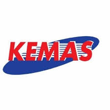
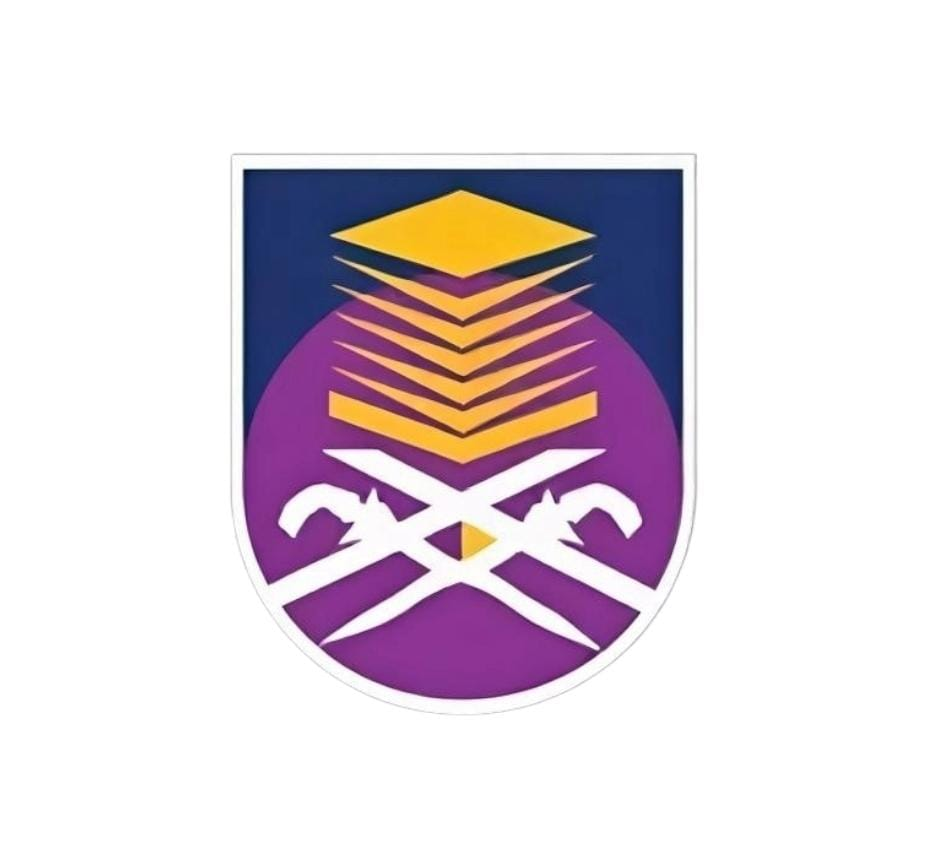

n.d.
Tabika Kemas Kampung Baru Tualak

2012 – 2017
Sekolah Kebangsaan Tualak

2018 – 2022
Sekolah Menengah Kebangsaan Kuala Nerang

2023 – 2026
Universiti Teknologi Mara Cawangan Kedah (Diploma)

Tabika Kemas Kampung Baru Tualak
Sekolah Kebangsaan Tualak
Sekolah Menengah Kebangsaan Kuala Nerang

Universiti Teknologi Mara Cawangan Kedah (Diploma)